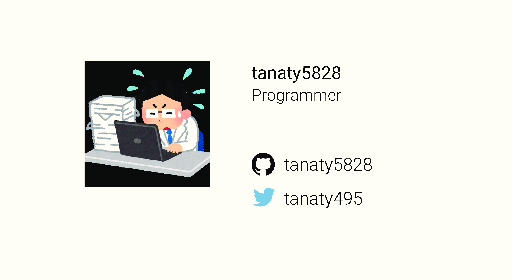

Contents
Welocome to Okazaki-Lab !!
Linux
Linux Basic
Linux Basic Questions
Linux commands (nessesary)
vi
ssh
Molecular Dynamics
Molecular Dynamics Software
Gromacs
Namd
LAMMPS
MPDyn
Gnuplotでグラフ作成
VMD
Discovery Studio
FFTW
PLUMED
Packmol
MPI environment
Tools
slack
Device in Lab
How to edit this homepages
Sandbox
Python Room
:snake: matplotlib
MDAnalysis
MDAnalysis tutorial
Anaconda
Hiroki Tanaka
Hiroki Tanaka
Title
Skils & Likes
Likes
Readable Code
Home build PC
SIEGE
»
Hiroki Tanaka
View page source
Hiroki Tanaka
¶
Title
¶

Skils & Likes
¶
Likes
¶